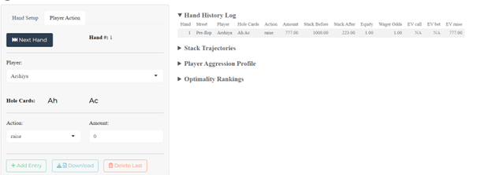
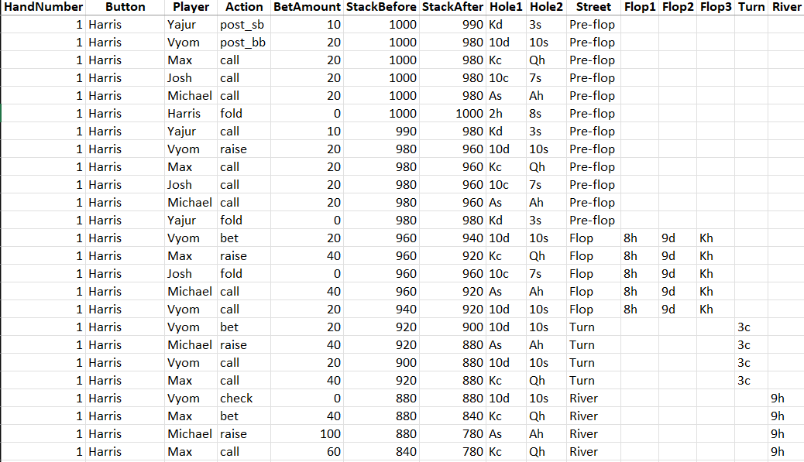
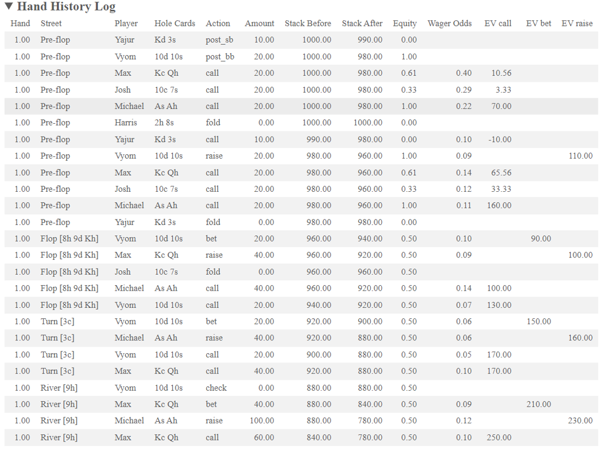
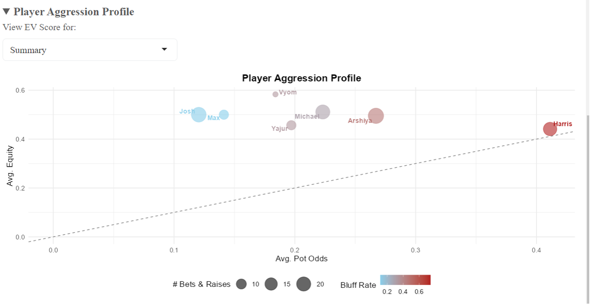
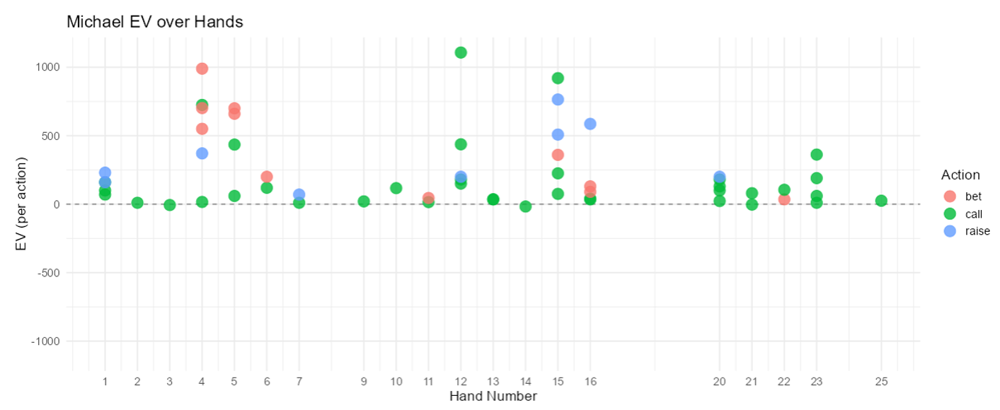
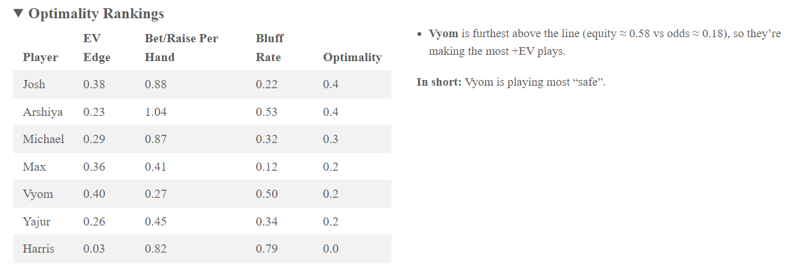

Poker may be a game of incomplete information, but the modern table is overflowing with data, stack depths, bet sizes, board textures, and the subtle gaps between pot odds and real equity that separate a solid value bet from an expensive bluff. My goal was to capture that information while the chips are still moving, enrich it with fast analytics, and surface insights quickly enough to influence live play.
To do this I built an R shiny "Poker EV tool". This app replaces the scratch pad notetaking with an end-to-end pipeline that follows the classic data-science staircase.
Data → Tidy → Transform → Model → Visualize → Communicate
Collect: Live inputs for each action plus a drag and drop import of PokerStars Text logs and Holdem Manager Spreadsheets.
Tidy and Transform: Every hand explodes into a long table of atomic actions, then gains derived fields, running pot size, pot odds, equity proxies and street level expected value.
Model: A two-state Hidden Markov Model (HMM) flags likely bluff in real time; a custom optimality score ranks who's profiting and who is leaking.
Visualize and Communicate. One click reveals stack-versus-pot area charts, an aggression bubble plot, per-player EV trends, and plain English bullet summaries to be digested by a general audience.
The result is a tool that turns raw hand histories into actionable coaching notes in seconds, setting the stage for deeper Monte-Carlo equity engines, live dashboards, and what-if simulators outlined later in this report.
The Poker Data Recorder squarely tackles the talent-management functions that matter most at the table. It turns every action into equity versus odds metrics, an HMM-based bluff rate, and a single Optimality score, giving you rigorous player evaluation and prospect assessment in minutes rather than hours. Because the summaries call out who is leaking EV and how, the app also serves as a player-development aid; coaches can hand a struggling grinder a bullet-point list of specific leaks to plug. The live EV trend and aggression bubble plot feed directly into on-field strategy and real-time decision making: you instantly see whether to isolate, avoid, or lean on a given opponent. At the group level these same metrics help with light personnel decisions such as who to stake, who to bench, or how to seat friends in a home game, nudging you toward an optimized roster value. Functions that hinge on external bankroll contracts, such as full trade analysis, roster construction, asset valuation, and formal player acquisition strategy, sit outside the app's current scope, but the rich performance data it produces would be the natural input for those higher-level front-office tools.
https://cheenos.shinyapps.io/poker-metrics/
Data Collection and Generation
The project runs on two deliberately different data sets so that the pipeline would face both idealized input and real-world chaos.
Synthetic PokerStars Log
To battle test the parse before I incorporate real gameplay, I used GPT-o4 to auto generate 10 independent hands, 6 max no-limit-Hold’em log in native PokerStars .txt syntax. Prompts randomized seat changes, blind levels, raise amounts, street length which forced every branch of regex to be used. Although the AI log at points did not make much sense in terms of a poker context, it allowed me to work on parsing a large sample of data to be used for my needs. It has made my parsing code more robust and showcase the ability to parse text logs for convenience.
Once the bare-bones of the Shiny poker recorder was stable, I enlisted 7 friends from the UWPSC (University of Waterloo Poker Studies club) to play a home game for over two hours. Every hole card, post, bet, call, raise, check, and fold was entered with the app. Producing over 20 hands each with their own action rows. Because stacks, board cards, and button positions were captured live, it showcased the intensive data that each hand produces. It also highlighted some quality of life improvements that the app could use to improve the efficiency of collecting live data.

Together, the AI-generated file proved the pipeline’s structural robustness, while the home-game capture supplied the noisy, real-life data on which all subsequent equity, EV, and bluff-probability analyses in this report are based.
The recorder is intentionally narrow scoped. It ingests only three data shapes, which are built into the same default column template the app itself exports. 1. Live clicks entered in the Shiny UI, which naturally conform to that template. 2. PokerStars hand-history .txt files that follow the site’s standard syntax; the parser rewrites them into the template but will reject logs from other rooms (GG, ACR, Winamax) or mixed-game formats. 3. Spreadsheets previously exported by this app—either .csv or .xlsx—because they already match the template’s column names (HandNumber, Player, Action, BetAmount, StackBefore, and so on). Any file outside these three cases kicks up a “Unsupported format” warning and is ignored, keeping the analytics pipeline simple and predictable.
 The actions are stored in this format which can be re-uploaded into the App
Tidy
The tidying layer is almost entirely code-driven and lives inside 2 helpers within the file.
Helper
Where it fires
What it does
get_action_summary()
when a .txt PokerStars log is uploaded
Regex‐parses seat headers, blind posts, bet/raise/call lines, board cards and showdowns, then explodes each hand into “one row per player‐action.”
recalc_analytics()
after tidying, every time we append or edit rows
Recalculates pot evolution, odds, equity proxies and EV so the data frame is self‐contained.
{: #tbl:helpers tbl-cap=“Table 2.1: Overview of helper functions in the pipeline.”}
Full Cleaning Process
1. File Read In
Both PokerStars text logs and CSV/Excel files are supported:
Code
# a) Excel / CSV#library(readxl)#library(readr)#csv_data <- read_csv("data/my_data.csv")#xlsx_data <- read_xlsx("data/my_data.xlsx")# b) PokerStars text#txt_lines <- readLines("data/hand_history.txt")#action_tbl <- get_action_summary(txt_lines)
2. Header Nomination
Canonicalize column names so downstream joins never breakL
Impute missing StackAfter
When legacy logs omit StackAfter, compute it from the difference:
Code
# data <- data %>%# mutate(# StackAfter = coalesce(StackAfter, StackBefore - # BetAmount)# )
Fix impossible bets
If someone somehow “bets” more than their stack, we recast it as an all-in call and clamp the amount:
Action: change to "all-in call"
BetAmount: set to the full StackBefore
Code
# data <- data %>%# mutate(# Action = if_else(BetAmount > StackBefore, "all-in call", Action),# BetAmount = pmin(BetAmount, StackBefore)# )
Transform
After the tidy step every action sits in a long data frame with the raw columns HandNumber, Dealer, Player, Hole Card 1 and 2, Action, BetAmount, StackBefore, Street. The bulk of the transforming uses the function recalc_analytics which enriches the table with quantitative features that power every later model and plot.
{: #tbl:analytics tbl-cap=“Table 3.1: Derived analytics columns with formulas and intuition.”}
#####Equity Proxy To circumvent the time and processing power used to generate exact Monte-Carlo equity, we use approx_equity(hole, street) which looks up a fast pre-flop table (Chen formula) or a turn/river. This keeps latency < 30 ms per action so the live recorder stays responsive.
#####Expected Value columns Three mutually exclusive columns (EV_call, EV_bet, EV_raise) are populated so that the EV-trend plot can call coalesce() and get the correct value regardless of action type. A dashed horizontal zero line in that plot lets players see at a glance which decisions gained or bled chips.

Modelling
Our modelling layer has two goals: (i) assign every bet or raise a live probability that the actor is bluff-heavy, and (ii) roll all per-player statistics into a single “Optimality” KPI that balances value betting, smart aggression, and controlled bluffing. We lean on the poker-AI literature for both the choice of features and the mathematical footing: Billings’ foundational work on computer-poker evaluation (Billings & al., 2006), Chen & Ankenman’s equity-versus-price calculus (Chen & Ankenman, 2006), Sire’s tournament-flow statistics (Sire, 2007), Teófilo’s abstraction heuristics (Kuznetsov, 2024), Kang & Shelton’s HMM opponent-modelling insights (Kuznetsov, 2024), and modern variance-reduction techniques (AIVAT (Burch et al., 2020)). The subsections below detail our implementation, show the equations, and justify defaults with citations.
We need two layers of insight:
A Hidden-Markov Model (HMM) that tags each bet or raise with a live bluff-probability, and
An Optimality score that rolls every per-player metric (edge, volume, discipline) into one number.
Those choices echo classic computer-poker work (Billings, Chen & Ankenman) (Billings & al., 2006) and later real-time opponent-modelling papers (Kang & Shelton). (Kuznetsov, 2024)
Hidden Markov Model, “Is this bet a bluff?”
Poker hands arrive as an unlabelled time-series of actions. There are no indicators which determine if a hand is a value bet of a bluff, yet that latent intent drive strategy. A Hidden Markov Model fits that exact scenario
From the transform stage we carry four statistics: From the transform stage we carry four statistics:
From the transform stage we carry four statistics:
Symbol
Meaning
\(E\)
equity proxy
\(O\)
price offered (WagerOdds)
\(G = O - E\)
Bluff Gap
\(R\)
relative bet size
{: #tbl:transform-stats tbl-cap=“Table 2.1: Four transform‐stage statistics.”}
Two state Gaussian HMM
We model hidden states V (Value) and B (Bluff). Each emits (G, R) with independent normals; parameters and the transition matrix are leaned by Expectation Maximization. It is the simplest model that captures the qualitative switched noted in real time opponent studies (Kuznetsov, 2024) . Early experiments with 3 and 4 states over fit the set.
Gaussian emissions
BluffGap and RelativeBetSize are roughly bell shaped after truncating the tails. A diagonal covariance keeps the parameter count low and EM is stabilized.
Posterior coding gives:
\[
\label{eq:pbluff}
p_{\mathrm{bluff}} \;=\; P\bigl(S_t = B \mid G_t, R_t\bigr)
\] If a player shows less than three aggressive actions the model is skipped and the bluff field is left NA to avoid small sample size noise.
An alternative considered was logistic regression, however the lack of labelled bluffs made this a very difficult feat.
Optimality Score, from micrometrics to one KPI
The Optimality index is designed to answer the single question most asked: “Who is actually playing well once volume and bluff discipline are taken into account?” We start with Chen and Ankenman’s (Chen & Ankenman, 2006) equity-edge idea in which a call, bet, or raise is worth taking only when
A player who takes profitable spots more often grows the bankroll faster. Raw counts (\(n_{\text{actions}}\)) would unfairly favour marathon sessions, so we normalise by hands played.
\(0 \le \nu \le 1\)
\(B\) (Bluff bonus / penalty)
A controlled share of +EV bluffs raises win-rate; the same share on a negative edge accelerates losses (Billings et al., 2006).
{: #tbl:opt-modifiers tbl-cap=“Table 4.1: Modifiers and scaling for the Optimality index.”}
\[
\label{eq:opt}
\mathrm{Opt} \;=\; (\overline{E} - \overline{O}) \times \nu \times B
\] ##### Variance notes, “Making live EV readings believable”
Per-action equity is notoriously noise, the river card alone can swing expectation by a fill pot. Following Burch’s (Burch et al., 2020) AICAT method we can slash variance by primarily focusing on EV over Equity. For each street we replace equity with its conditional expectation given the exposed board. This removes variance that is purely due to future RNG. Lower variance stabilizes both the HMM training and the Optimality ranking, so small hand samples are less prone to lucky “heat-runs.”
Next Steps in Modelling
Building our HMM Optimality Framework, the following enhancements will sharpen predictive power and real world relevance.
Replace the approx_equity() lookup with a Monte-Carlo equity simulations to eliminate lookup bias and handle arbitrary board textures.
Optimality weight calibration Automate the selection of the volume and bluff multipliers via grid-search or Bayesian optimization against a hold-out set of live-session profit traces.
Compute a Hero Bluff metric in which the model only uses the Hero Player’s hole cards and omits the hole cards of the other players and uses a plausible range of cards for each opponent.
Visualizing and Communication
Once every action is enriched with equity, EV, bluff-probability, and stack context, we use 3 key plots to surface patterns at a glance. All code lives in the server file’s renderplot() calls.
Stack and Plot Volume Area Chart
This chart shows how each player’s stack evolves hand-by-hand alongside the total pot size.
The aggression bubble plot distils each player’s betting profile into a single point using four visual channels:
Horizontal Axis (x = Average Pot odds) The mean price a player has paid for calls, bets, and raises. Lower values indicate cheaper bets (tighter play) wile higher values signal looser, more speculative actions.
Vertical axis ( y = Average Equity) The mean hand strength (equity) when they chose to invest. Higher values reveal a focus on value spots whereas lower values suggest frequent “chasing” of draws or marginal holdings.
Bubble Area (size = # of bets & raises) Encodes aggression volume. Large bubbles show players who bet or raise often, small bubbles mark those who pick their spots more conservatively.
Colour Gradient (colour = Bluff Rate) A sky blue -> firebrick spectrum highlights how often a player’s actions fall into the bluff state as estimated by the HMM. Blue tones denote disciplined, predominantly value-driven play, red tones flag high bluff propensity.

Code
# player_summary <- reactive({# at <- action_table_hmm()# # # if there were no bet/raise actions, return an empty tibble# if (nrow(at) == 0) {# return(tibble(# Player = character(),# avg_equity = double(),# avg_odds = double(),# avg_EV_raise = double(),# bluff_rate = double(),# n_actions = integer(),# n_hands = integer(),# vol_frac = double()# ))# }# # ## 16-1) Aggregate bet/raise metrics per player# raw <- at %>%# group_by(Player) %>%# summarise(# avg_equity = mean(Equity, na.rm = TRUE),# avg_odds = mean(WagerOdds, na.rm = TRUE),# avg_EV_raise = mean(EV_raise, na.rm = TRUE),# bluff_rate = mean(bluff_prob, na.rm = TRUE),# n_actions = n(),# .groups = "drop"# )# # ## 16-2) How many distinct hands did each player sit in?# hands <- rv() %>%# distinct(HandNumber, Player) %>%# count(Player, name = "n_hands")# # ## 16-3) Join & compute volume fraction (aggressive acts per hand)# raw %>%# left_join(hands, by = "Player") %>%# mutate(# vol_frac = if_else(n_hands > 0, n_actions / n_hands, 0)# )# })
Interpretation Tips
The 45° dashed line is the break-even baseline: any bubble above it represents a player whose average equity exceeded average price paid—i.e., +EV play.
A large blue bubble high and to the left signals a “solid reg” who bets often but primarily in value spots.
A large red bubble low and to the right reveals a “spewy bluffer” whose aggression outpaces hand quality.
Clusters often emerge: tight-aggressive (“TAG”) players form a medium-sized, moderately red cluster above the line; tight-passive players hug the lower-left, small-light bubbles; and loose players scatter rightward with varied colours.
Why This Works
Multidimensional view: condenses four metrics into a single, intuitive chart.
Immediate outlier detection: extreme bubbles and positioning jump out, guiding coaches where to focus.
Comparative benchmarking: everyone shares the same axes, making peers comparisons trivial.
EV Scatter Plot
For a selected player, we chart per-action EV over time. A zero-EV dashed highlights wins versus losses.
Key elements
Hand Number (x-axis). Chronological order of hands lets you see hot and cold streaks.
EV per Action (y-axis). Positive value denote “+EV” decisions; negative values indicate chip losing moves
Colour = Action type. Differentiates Calls, bets, and raises so you can spot which action type carries the most variance.

Code
# output$ev_trend <- renderPlot({# req(input$focus_player != "Summary")# df <- rv() %>%# filter(# Player == input$focus_player,# Action %in% c("bet", "call", "raise")# ) %>%# mutate(ev_score = coalesce(EV_call, EV_bet, EV_raise))## # Symmetric y-axis so gains and losses are directly comparable# max_abs <- max(abs(df$ev_score), na.rm = TRUE)## ggplot(df, aes(x = HandNumber, y = ev_score, color = Action)) +# # Zero-EV baseline# geom_hline(yintercept = 0, linetype = "dashed", color = "grey50") +# # Each dot = one aggressive action’s EV# geom_point(size = 4, alpha = 0.8) +# scale_y_continuous(limits = c(-max_abs, max_abs)) +# scale_x_continuous(breaks = unique(df$HandNumber)) +# labs(# title = paste(input$focus_player, "EV per Action Over Hands"),# x = "Hand Number",# y = "EV (chips)",# color = "Action Type"# ) +# theme_minimal(base_size = 13)# })
Optimal Table and Headline Summary
The Optimality Table ranks each player by their composite “Optimality” score and lays out the three components that feed into it, EV Edge, Bet/Raise Rate and Bluff Rate, so you can pinpoint exactly why one player sits above or below another. By presenting why one player sits above or below another. - EV Edge (= Average Equity – Avg Pot Odds) shows pure decision quality.
Bet/Raise Rate (= Aggressive Actions/Hands Played) measures how often a player seizes spots.
Bluff Rate (= Mean HMM Bluff Probability) captures their discipline with inpaired or weak holdings
Optimality multiplies those three factors into one number, so a high-scoring player must excel on all fronts
Immediately next to the table, the Headline Summary pulls out the story in two sentences:

This detailed table plus a concise, human read-able paragraph ensures that both data savvy coaches and casual observers instantly grasp who’s excelling, who is leaking chips and which levers each player should pull to improve.
I used ChatGPT to debug my entire workflow OpenAI ChatGPT (2025a).
References
Billings, D., & al., et. (2006). Algorithms and assessment in computer poker. AAAI Spring Symposium.
Burch, P. et al. (2020). AIVAT: An action‐informed variance reduction method for poker. Transactions on Games.
Chen, B., & Ankenman, J. (2006). The mathematics of poker. ConJelCo LLC.
Kuznetsov. (2024). Hidden markov models for opponent modelling in poker. Proc. Of Another Conf.